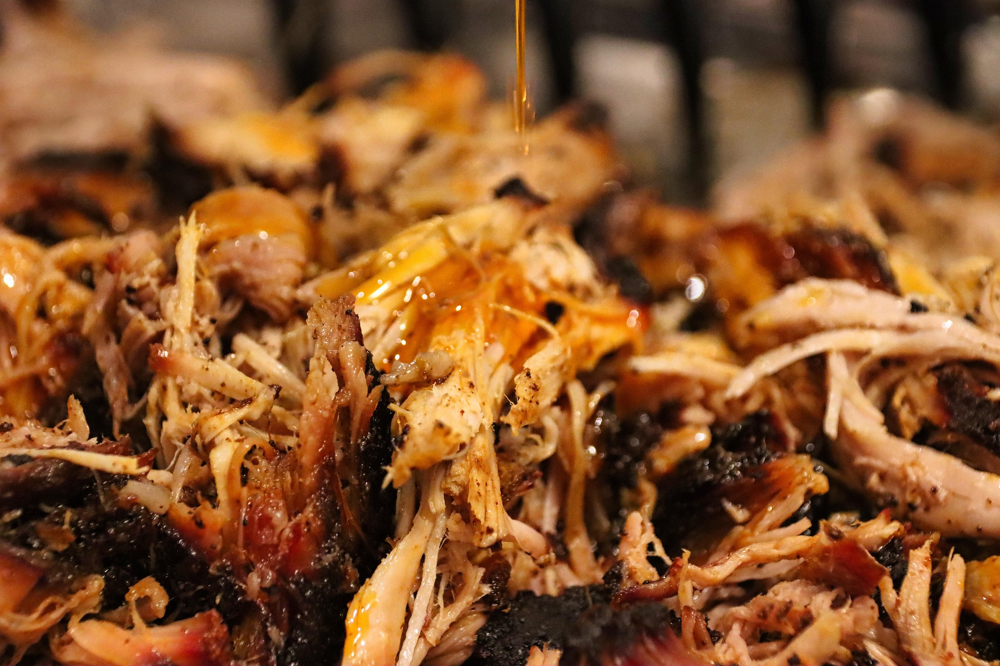

Smoked Pork Butt

Shredded smoked pork butt
Smoked Pork Butt is a fantastic meal for any day of the week. This
recipe definitely takes some time, but it is well worth the wait.
The recipe does not require any specific portion. Everything is up
to your tastes.
You will need a smoker. I have no experience with any smokers other
than a pellet smoker. The important thing is to control the
temperature of the smoker.
Ingredients
- Pork butt (any size)
- Prepared mustard (or a binder of your choice)
- Seasoning of your choice
Steps
- Dry the pork butt with a paper towel
-
Let the pork butt sit out at room temperature for an hour or so
- Set the smoker to 175°F.
- Dry the pork butt with a paper towel again
-
Apply a thin layer of binder, mustard in my case, all over the
pork butt
-
Season the pork butt with you seasoning of choice. Lay it on
thick!
- Lay that delicious chunk of meat in the smoker.
- Let the smoker do its thing for about 8 to 10 hours.
-
Remove the pork butt from the smoker and wrap the pork butt in
aluminum foil.
- At this point, you can do one of two things:
- Put the pork butt in an oven set to 250°, or
-
Put the pork butt back in the smoker at a temperature of
250°
-
Let the pork butt continue to cook until it gets to an internal
temperature of 200 - 210°F
-
Once the pork butt has hit the correct temp, remove it from the
oven or smoker
-
Wrap the pork butt in old towels and sit it in a thermally
insulated container
-
Resting the pork butt is essential. I like to let it rest at
least a couple of hours
- Once rested, shred that sweet, sweet meat up and serve
Home Page